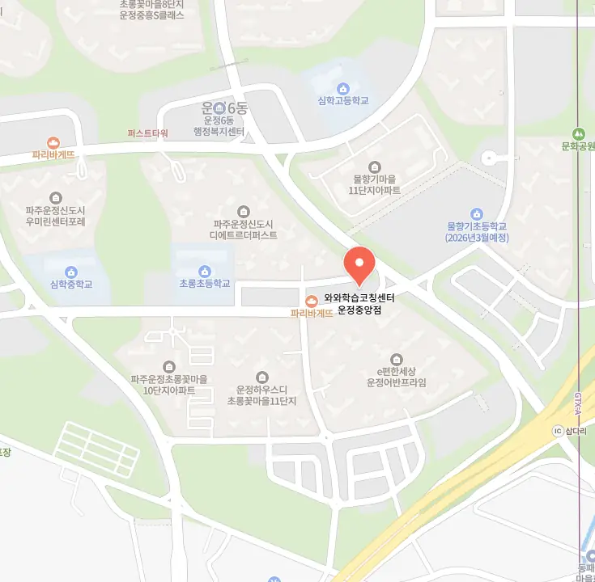

동패동 단과 영어학원
동패동 단과 영어학원
틀린 문제를 다시 접근할 때는 단순히 답만 찾는 것이 아니라, 문제 해결 과정을 전략적으로 재구성함으로써 사고 전환을 촉진한다. 과거의 계획과 실제 수행 이력을 비교하며 개선점을 찾는 과정은 학습의 자율성을 높이는 데 핵심이다. 이러한 상황에서는 시험 전 3일을 오롯이 복습에 전용하는 전략이 매우 효율적이다. 동패동 단과 영어학원은 정리 노트를 기존의 수직적 정리 방식에서 벗어나 사고맵 형태나 색상 기반 계층화로 형식을 개선하면, 정보의 흐름과 인과관계를 시각적으로 파악할 수 있어 개념의 통합적 이해가 가능해진다. 특히 학교별 오답률이 높은 문제만 골라 ‘틀린 문제 복습의 날’을 운영하는 것은 품질 중심의 학습 접근이다. 동패동 단과 영어학원은 복습 간격은 일정하게 유지하기보다는 성과에 따라 유동적으로 조정되며, 예를 들어 한 개념을 처음 학습한 후 1일, 3일, 7일, 14일 주기 외에도 오답률이 30% 이상이면 추가 2회 복습을 자동으로 삽입하는 알고리즘 기반 시스템이 도입되고 있다. 학생의 지필 테스트 기록을 디지털이나 종이 기반으로 누적 관리하면서 오답 패턴과 약점 단원을 추적하면, 교사나 학부모가 함께 개입하여 전략을 수정하는 데도 유용한 데이터가 된다.